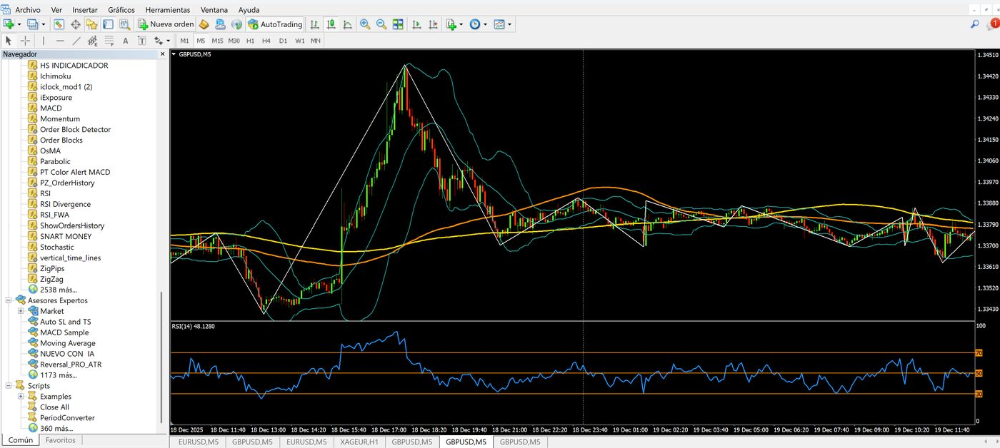
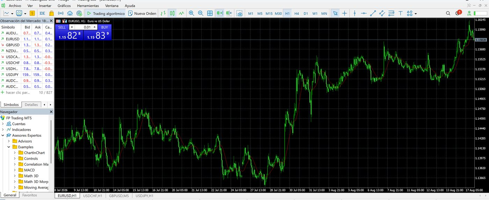
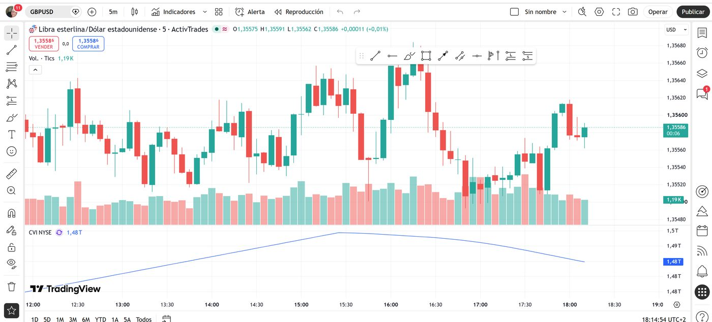
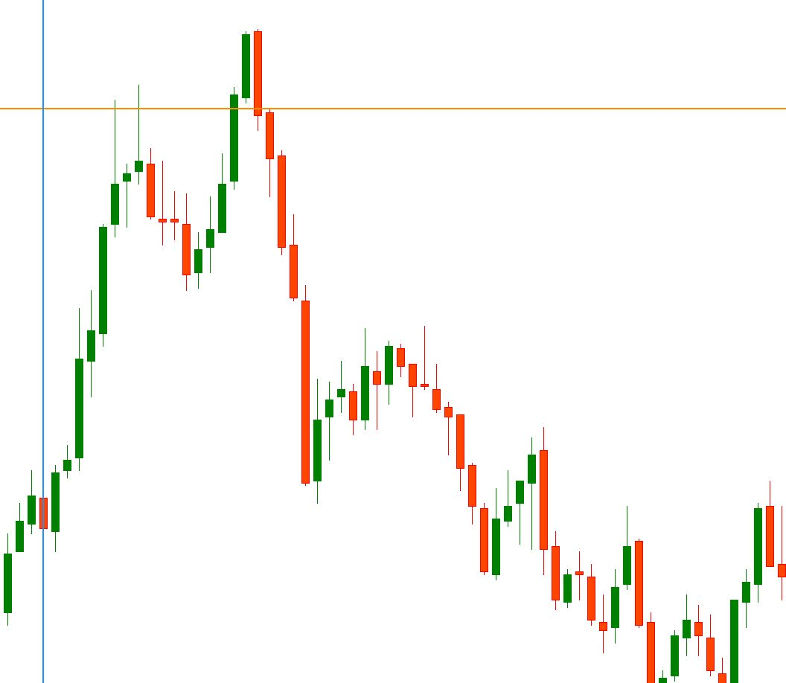

Muchas personas llegan al trading con una pregunta muy sencilla: «¿Por dónde empiezo?». Es normal sentirse perdido al principio. Hay gráficos, velas, plataformas, números, noticias y una gran cantidad de términos que parecen otro idioma.
La buena noticia es que no necesitas entenderlo todo de golpe. El primer paso no es abrir una operación: es aprender el significado de los conceptos básicos y comprender qué ocurre detrás de cada botón de una plataforma. Esta guía está pensada para quien empieza desde cero.
¿Qué es el trading?
El trading consiste en comprar y vender activos financieros con el objetivo de aprovechar los cambios de precio. Un trader puede operar, por ejemplo, con divisas, acciones, índices, materias primas o criptomonedas, según el mercado y el producto que ofrezca su bróker.
A diferencia de una inversión tradicional a largo plazo, el trading suele centrarse más en movimientos de precio de corto o medio plazo. Eso no significa que sea fácil ni que permita obtener beneficios garantizados: exige formación, práctica, control del riesgo y disciplina emocional. Antes de poner dinero real, lo razonable es dedicar tiempo a entender cómo funciona el mercado y practicar en una cuenta demo.
El recorrido básico: del mercado a una operación demo
De forma simplificada, el proceso es este:
- Eliges un mercado que quieres estudiar.
- Utilizas un bróker para acceder a ese mercado.
- Operas o analizas desde una plataforma.
- Practicas primero en una cuenta demo, sin dinero real.
¿Qué es Forex?
Forex viene de Foreign Exchange, es decir, mercado de divisas. Es el mercado en el que se intercambian monedas de distintos países. Cuando vemos un gráfico como EUR/USD, estamos observando la relación entre el euro y el dólar estadounidense: EUR es la divisa base y USD es la divisa cotizada. Si EUR/USD está en 1,1000, significa que un euro equivale a 1,10 dólares.
En Forex las divisas se negocian por pares porque, al comprar una moneda, necesariamente estás vendiendo otra. Algunos pares conocidos son:
- EUR/USD: euro frente a dólar estadounidense.
- GBP/USD: libra esterlina frente a dólar estadounidense.
- USD/JPY: dólar estadounidense frente a yen japonés.
- EUR/GBP: euro frente a libra esterlina.
Forex es un mercado muy popular por su liquidez y por su amplio horario de negociación durante los días laborables. Sin embargo, su accesibilidad no elimina el riesgo: los precios pueden moverse con rapidez, especialmente ante noticias económicas o acontecimientos inesperados.
¿Qué es un bróker?
Un bróker es la empresa que actúa como intermediaria para que puedas acceder a los mercados. Es decir, normalmente no compras o vendes directamente «en el mercado»; utilizas la infraestructura y los servicios de un bróker. A través de un bróker puedes encontrar distintos activos o productos, como pares de divisas, acciones, índices, materias primas o criptomonedas. La oferta concreta depende de cada entidad y de tu país de residencia.
Al investigar un bróker, no te fijes solo en la publicidad, los bonos o las promesas de facilidad. Es importante comprobar aspectos como:
- Si está regulado y autorizado para operar donde resides.
- Qué productos ofrece realmente.
- Qué comisiones, spreads y costes aplica.
- Cómo funciona su servicio de atención al cliente.
- Qué protección ofrece a los fondos de los clientes.
- Qué condiciones tiene para retirar el dinero.
- Si permite abrir una cuenta demo.
Un bróker no convierte una estrategia en rentable ni elimina el riesgo. Es solo la puerta de acceso técnica al mercado.
Plataformas de trading: MetaTrader 4, MetaTrader 5 y TradingView
Una vez tienes acceso a un bróker, necesitas una plataforma desde la que analizar precios y gestionar operaciones.
MetaTrader 4 (MT4)
MetaTrader 4, conocida como MT4, es una de las plataformas más utilizadas históricamente para Forex y ciertos productos derivados. Permite:
- Ver gráficos en distintos marcos temporales.
- Añadir indicadores técnicos.
- Abrir, modificar y cerrar operaciones.
- Colocar órdenes de stop loss y take profit.
- Crear alertas y usar herramientas de análisis.
Su interfaz puede parecer antigua, pero sigue siendo conocida por muchos traders por ser sencilla y estable.

MetaTrader 5 (MT5)
MetaTrader 5, o MT5, es una versión más moderna y completa. Ofrece más marcos temporales, más herramientas de análisis y una estructura preparada para trabajar con una variedad mayor de mercados, dependiendo del bróker. Aunque sus nombres se parecen, MT4 y MT5 no son exactamente la misma plataforma ni siempre son compatibles entre sí. Antes de elegir una, conviene revisar cuál ofrece el bróker y para qué mercado la necesitas.

TradingView
TradingView es una plataforma especialmente popular para analizar gráficos. Destaca por su diseño visual, sus herramientas de dibujo, indicadores, alertas y la posibilidad de consultar ideas publicadas por otros usuarios. Muchas personas utilizan TradingView para hacer análisis y después ejecutan las operaciones desde MT4, MT5 o la plataforma del bróker. En algunos casos, TradingView también puede conectarse a determinados intermediarios.
Es importante recordar que un gráfico bonito o un indicador no predice el futuro. Las herramientas ayudan a organizar el análisis, pero no eliminan la incertidumbre del mercado.

Las velas japonesas: cómo se representa el precio
Los gráficos de velas japonesas son una forma visual de mostrar cómo ha evolucionado el precio durante un periodo concreto: un minuto, una hora, un día o cualquier otro marco temporal. Cada vela muestra cuatro datos:
- Apertura: el precio al inicio del periodo.
- Cierre: el precio al final del periodo.
- Máximo: el precio más alto alcanzado.
- Mínimo: el precio más bajo alcanzado.
Una vela alcista suele indicar que el precio cerró por encima de donde abrió. Una vela bajista suele indicar lo contrario. Sin embargo, una sola vela no cuenta toda la historia. El análisis debe tener en cuenta el contexto: tendencia, niveles relevantes, volatilidad, noticias y gestión del riesgo.

¿Qué es un lote?
Un lote es el tamaño de una posición. En otras palabras, indica cuánto estás operando. En Forex, de forma tradicional:
- 1 lote estándar equivale a 100.000 unidades de la divisa base.
- 0,10 lotes equivale a un minilote: 10.000 unidades.
- 0,01 lotes equivale a un microlote: 1.000 unidades.
Por ejemplo, en EUR/USD, abrir una operación de 0,01 lotes significa operar con una exposición mucho menor que hacerlo con 1 lote completo. El tamaño de la posición importa porque influye directamente en cuánto puede variar el resultado de una operación. Por eso, antes de abrir una operación, no basta con pensar «creo que el precio subirá». Hay que saber cuánto se está arriesgando y qué tamaño de posición es coherente con el capital disponible.
¿Qué es un pip?
Un pip es una unidad que se utiliza para medir pequeños movimientos en el precio de un par de divisas. En muchos pares de Forex, un pip suele corresponder al cuarto decimal. Por ejemplo: si EUR/USD pasa de 1,1000 a 1,1001, se ha movido 1 pip. Si pasa de 1,1000 a 1,1050, se ha movido 50 pips.
El valor económico de cada pip depende del par que se opera, del tamaño del lote y de la divisa de la cuenta. Por eso dos personas pueden ver el mismo movimiento en el gráfico y tener resultados económicos muy diferentes.
¿Qué es el spread?
El spread es la diferencia entre el precio de compra y el precio de venta de un activo. Cuando abres una operación, es habitual que empieces con una pequeña diferencia negativa debido a ese coste. En mercados con mucho movimiento o poca liquidez, el spread puede ampliarse. Además del spread, pueden existir otros costes:
- Comisión por operación.
- Comisión de mantenimiento nocturno o swap.
- Costes por conversión de divisa.
- Comisiones de ingreso o retirada, según el bróker.
Conocer los costes es una parte esencial de entender una operativa.
¿Qué es el apalancamiento?
El apalancamiento permite controlar una posición mayor utilizando una cantidad menor de capital propio como garantía. Puede hacer que pequeños movimientos del mercado tengan un impacto mayor en tu cuenta. El apalancamiento puede aumentar la exposición, pero no reduce el riesgo. De hecho, si se utiliza sin entenderlo, puede acelerar las pérdidas.
El apalancamiento es una de las razones por las que una cuenta demo es tan útil: permite ver cómo cambian el margen, el tamaño de posición y el resultado sin exponer dinero real.
Margen: el capital que respalda la operación
El margen es la cantidad de dinero que el bróker bloquea como garantía para mantener una operación apalancada abierta. No es una comisión; es una parte del saldo que queda reservada mientras la posición está activa. Si las pérdidas se acercan demasiado al capital disponible, el bróker puede exigir más margen o cerrar posiciones automáticamente, según sus condiciones. Por este motivo, operar con todo el capital disponible no suele ser una buena práctica de aprendizaje.
Stop loss y take profit
Dos herramientas esenciales de gestión del riesgo son:
- Stop loss: orden que busca cerrar una operación si el precio llega a un nivel de pérdida previamente definido.
- Take profit: orden que busca cerrar una operación cuando el precio alcanza un objetivo de beneficio determinado.
Ninguna de estas herramientas garantiza un resultado exacto en todas las circunstancias, ya que en mercados muy rápidos puede haber diferencias entre el precio esperado y el precio de ejecución. Aun así, ayudan a definir el plan antes de operar y a evitar decisiones impulsivas. La pregunta importante no es solo «¿cuánto puedo ganar?», sino también: «¿cuánto estoy dispuesto a perder si mi idea es incorrecta?».
Posiciones de compra y de venta
En trading encontrarás dos posibilidades básicas:
- Comprar o ir en largo: se hace cuando se considera que el precio podría subir.
- Vender o ir en corto: se hace cuando se considera que el precio podría bajar.
Por ejemplo, si una persona compra EUR/USD y el euro se fortalece frente al dólar, el precio del par puede subir. Si ocurre lo contrario, el resultado puede ser negativo. Operar en corto no significa que el riesgo sea menor. En cualquier dirección, el mercado puede moverse en contra de la operación.
Acciones, índices, materias primas y criptomonedas
Además de Forex, existen otros mercados que suelen aparecer en las plataformas:
- Acciones: representan una participación en una empresa. No es lo mismo comprar una acción al contado que operar con un producto derivado que sigue su precio.
- Índices: agrupan varias acciones y reflejan el comportamiento de un sector o mercado, como un índice tecnológico o nacional.
- Materias primas: incluyen activos como el oro, la plata, el petróleo o el gas.
- Criptomonedas: activos digitales con alta volatilidad en muchos casos.
Antes de operar cualquier producto, debes comprender qué estás adquiriendo u operando, cuáles son sus costes, cómo se calcula el resultado y qué riesgos específicos tiene.
¿Por qué empezar con una cuenta demo?
Una cuenta demo simula las condiciones de una plataforma de trading usando dinero virtual. Es el mejor punto de partida para familiarizarte con la tecnología sin arriesgar capital real. En una cuenta demo puedes practicar:
- Abrir y cerrar operaciones.
- Cambiar el tamaño de los lotes.
- Colocar un stop loss y un take profit.
- Identificar spreads y costes.
- Aprender a leer un gráfico.
- Llevar un diario de operaciones.
- Comprobar cómo reaccionas ante una pérdida o una ganancia.
La demo no reproduce por completo la parte emocional de operar con dinero real, pero sí permite aprender el funcionamiento básico con mucha más seguridad.
Un plan sensato para empezar
Si nunca has operado, un buen orden de aprendizaje sería:
- Aprende la diferencia entre invertir y hacer trading.
- Elige un mercado para estudiar, sin intentar abarcarlo todo.
- Familiarízate con los gráficos y las velas japonesas.
- Comprende qué son lote, pip, spread, margen y apalancamiento.
- Investiga brókers regulados y sus condiciones, sin precipitarte.
- Abre una cuenta demo.
- Practica con un tamaño de posición pequeño en la simulación.
- Lleva un diario: qué hiciste, por qué lo hiciste y cuál fue el resultado.
- Da prioridad a la gestión del riesgo, no a la velocidad.
- No operes con dinero que no puedas permitirte perder.
Conclusión
Empezar en trading no consiste en encontrar una fórmula rápida ni en copiar operaciones de otras personas. Consiste en construir una base: entender los mercados, aprender el lenguaje, practicar con calma y reconocer que toda operación implica riesgo. Forex, los brókers, MT4, MT5, TradingView, los lotes y el apalancamiento son solo el inicio. Cuando estos conceptos se entienden bien, resulta mucho más fácil seguir aprendiendo de forma ordenada y tomar decisiones con mayor criterio.
La mejor primera operación no es necesariamente la que se abre con dinero real. A menudo, es la que se analiza, se practica en demo y se revisa para aprender de ella.
Este artículo tiene fines exclusivamente educativos y divulgativos. No constituye asesoramiento financiero, recomendación de inversión ni una invitación a comprar o vender ningún activo. Operar en los mercados conlleva riesgo y puede ocasionar pérdidas, incluso superiores al capital inicialmente depositado en ciertos productos. Antes de tomar decisiones financieras, infórmate adecuadamente y, si lo necesitas, consulta con un profesional autorizado.